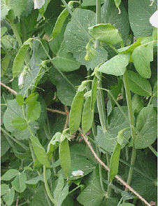
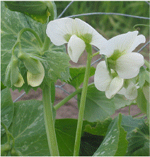
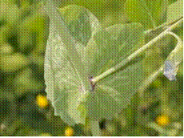
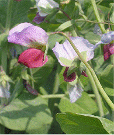
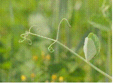

HORT 281 :: Lecture 17 :: ORIGIN, AREA, PRODUCTION, VARIETIES, PACKAGE OF PRACTICES FOR PEAS

Origin, area, production, varieties, package of practices for PEAS
Peas - (Pisum sativum L.) (2n = 14) - (Hindi : Matar)
Pea (Pisum sativum L.), the famous plant in which G.H. Mendel worked out Mendel Laws and Genetic Principles, is a noble and aristocratic vegetable. The crop is cultivated for its tender and immature pods for use as vegetable and mature dry pods for use as a pulse. In both cases, seeds are separated and used as vegetable or pulse. Peas are highly nutritive and contain high content of digestible protein (7.2 g / 100g), Carbohydrate (15.8 g), Vitamin-C (9 mg), phosphorus (139 mg) and minerals. Tender seeds are also used in soups. Canned, frozen and dehydrated peas are very common for use during off-season. Like any legume crop, pea is an integral component of sustainable agriculture due to its soil enriching and conditioning properties.
Origin
Vavilov (1926) listed different centres of origin for pea. Area comprising Central Asia, the Near East, Abyssinia and the Mediterranean is the centre of origin based on genetic diversity. Cultivated garden pea is not seen in wild state and it might have been originated from wild field pea or other related species.
Botany
Pea is a diploid with 2n=14. Field pea with coloured flowers belong to Pisum arvense and the garden pea with white flowers belong to P. sativum. Pea is a herbaceous annual plant with tap root system. Stem is upright, slender and usually single. Leaves are pinnately compound with the rachis terminating in a single or branched tendril. There are large stipules at base of leaf. Inflorescence is a raceme arising from axils of leaves and individual flowers are typical papilionaceous. Gynoecium is monocarpellary with ovules (up to 13) alternately attached to placenta. Style bends at right angle to ovary and stigma is sticky. Pods are straight or curved and seeds are smooth or wrinkled.
|  |  |
|  |  |
Varieties
Pea cultivars grown in different parts of the world exhibit wide variation in height of stem, branching, pod size, seeds per pod, shelling percentage, smoothness of seeds (smooth / wrinkled) etc.
The cultivars / varieties are grouped based on various characters as given below:
Basal on maturity period
- Early types – green pods will be ready for harvest by 65 days after sowing.
- Mid season types – pods will be ready for harvest by 85-90 days after sowing.
- Late main season types – pods will be ready for harvest by 110 days after sowing
- Based on height of plant
- Bush or dwarf types
- Medium tall
- Tall
Usually dwarf types are early and mid season types are medium tall. Late types are tall and require support.
A brief description of improved varieties is given below:
Developing institution |
Variety |
Special features |
IIHR, Bangalore. |
Arka Ajit |
Resistant to powdery mildew and rust. Yield 10t/ha in 90 days. |
|
UN 53-6 |
A snap pea where the whole pod is edible. Yield 8-9 t/ha in 90 days. |
IARI, New Delhi. |
Arkel* |
Early season variety introduced from England Dwarf plants bearing double pods at lower nodes and single at upper nodes. Pods 8.8 cm long and sickle shaped. Suitable for fresh market and dehydration. Susceptible to collar rot at high temperature. Yield 7.5 t/ha in 50-55 days. |
|
Bonneville* |
Mid season variety introduced from USA. Medium tall plants bearing double pods. Pods more than 9 cm long. Yield 8.5 t/ha. Seeds green and wrinkled. |
|
Sylvia |
Introduced edible podded variety suitable for kitchen garden. Pods curved, yellowish green without parchment. |
IARI, Regional Station, Katrain |
Lincoln* |
Early season variety introduced from France. Medium tall plants bearing double pods of 8-9 cm length and sickle shaped. Mature seeds wrinkled. First picking 85-90 days after sowing (DAS). Yield 68-10 t/ha. |
IIVAR, Varanasi. |
VRP 2* |
Plants 50 cm tall. Pods straight and medium sized. First harvest 55-58 DAS. Yield 10 t/ha. |
|
Kashi Nandini* (VRP 3) |
Early maturing variety developed through pedigree selection. Plants erect and dwarf. Pods long. Tolerant to leaf miner and pod borer. Yield 6.5 t/ha with 80 % shelling percentage. |
|
Kashi Shakthi* (VRP 7) |
Mid season variety. Plants 80 cm tall with attractive pods. Yield 7.5 t/ha. |
Tamil Nadu Agricultural University. |
Ooty 1 |
A dwarf variety with a yield of 11.9 t/ha in 90 days. Resistant to white fly. |
NDAU&T, Faizabad, UP. |
NDVP 8* |
Mid season variety with 10 t/ha. |
|
NDVP 10* |
Mid season variety with 10 t/ha. |
Punjab Agricultural University, Ludhiana |
Punjab 88* |
Early season variety developed through selection from cross between Pusa 2 x Morrasis 55. Pods dark green, long (8-10 cm) and slightly curved. Days to first harvest – 100. Yield 15 t/ha with 47% shelling percentage. |
|
Matar Ageta 6* |
Early season dwarf variety. Tolerant to high temperature. Yield 6 t/ha with 44.67% shelling percentage. Seeds smooth and green. |
CSAUA&T, Kanpur. |
Azad P.2* (PRS4) |
Resistant to powdery. Plants tall (130-150 cm). Straight and smooth pods. Yield 12 t/ha in 90-95 days. |
|
Azad P-3* (PRS 4) |
Early maturing variety. Pods straight, medium size. Yield 8 t/ha. |
JNKV, Jabalpur. |
Jawahar Matar 1* (JM 1, GL 141) |
Mid season dwarf variety with big, attractive green, 8-9 cm long pods containing 8-10 sweet green ovules. |
|
Jawahar Matar 2 |
Pods dark green, big, curved with 8-10 sweet ovules, wrinkle seeded, susceptible to powdery mildew. |
|
Jawahar Matar-3 (Early December*) |
Early season variety developed through selection from cross between T 19 x Early Badger. First picking in 50 DAS, Pods 7 cm long, light green and round oval / ovules. |
|
Jawahar Matar-4* (JM 4, GL 195) |
Mid season variety derived from T 19 x Little Marvel. Plants 50-60 cm tall. Pods 7 cm long, green. Mature seeds green and wrinkled. |
|
Jawahar Matar 15 |
Resistant to powdery mildew and Fusarium wilt. Plants dwarf. Yild 13 t/ha. |
|
Jawahar Matar 54 |
Powdery mildew resistant variety with big incurved pods enclosing 8-9 big wrinkled seeds. Yield 7 t/ha. |
|
Jawahar Peas 83* |
Mid season powdery mildew resistant variety developed through double cross (Arkel x JP 829) x (46 C x JP 501). Plants dwarf. Pods big and curved with 8 green and sweet ovules. Yield 12-13 t/ha. |
|
Harbhajan |
Early variety resembling to field pea. Susceptible to powdery mildew. Av. Yield 3 t/ha. |
GBPUA&T |
PM 2* |
Early variety developed through pedigree selection from cross between. Early Badger x Pant Uphar. Pods smaller than Arkel. Yield 10 t/ha. |
|
Pant Uphar* (IP3) |
Medium maturity, ready for harvest by 70-80 DAS. Flowers white, Pods round. Seeds wrinkled, Susceptible to powdery mildew. Resistant to stem fly. Yield 10 t/ha. |
|
Pant Sabji Matar 3 |
Early season variety with long curved pods with 8-9 ovules. Picking starts 60-75 DAS. Yield 9 t/ha. |
HAU, Hisar. |
Hisar Harit* (PH 1) |
Developed through selection from cross between Bonneville x P 23. Pods large, sickle shaped and single or double. Yield 9 t/ha. |
VPKAS, Almora |
VL Matar 3* |
Plants determinate. White flowers, straight and double podded. Length – 6.8 cm. First picking is 100 DAS. Yield 10 t/ha. |
|
VL Agethi Matar 7* (VL 7) |
Early season dwarf variety. First picking in 120-125 DAS. Pods 8 cm long, light green, slightly curved. Seeds wrinkled. Yield 23-25 t/ha. with 42% shelling. |
|
VL 8* |
Mid season variety with 10 t/ha. |
|
Vivek* (VL Matar 6) |
Medium mature variety with straight, 6-7 cm long pods. Seeds semi wrinkled. Moderately tolerant to cold and moisture stress. Yield 11 t/ha. |
TNAU, Coimbatore |
Ooty-1 |
Dwarf variety having a yield potential of 11.9 t/ha in 90 days. Resistant to white fly. |
* Varieties released / identified by AICRP (Vegetables)
In addition to the above improved varieties, cultivars like Asauji, Alaska, Meteor, Early Badger etc. are also very popular among farmers.
Climate
Pea is typically a cool season crop and thrives well in cool weather. Optimum temperature for seed germination is 22oC. Even though seeds germinate at 5oC, speed of germination is less. At higher temperature, decay of seedlings is more. Early stage of crop is tolerant to frost. But flowering and fruit development are adversely affected by frost. Optimum monthly mean temperature for growth of plants is 10-18.3oC. As temperature increases the maturity is hastened and yield is reduced. Quality of pods produced is also low at high temperature due to conversion of sugars to hemicellulose and starch.
Soil
Crop prefers well drained, loose and friable loamy soil for early crop and clayey soil for high yield. Ideal pH is 6.0-7.5 and it grows under alkaline soil. If soil is acidic, liming is recommended.
Season
In plains of North India, pea is sown from beginning of October to middle of November. Yield is drastically reduced when crop is sown after 4th December (Chaubey, 1977). Crop sown in September will be susceptible to wilt disease. In hills, pea is sown in March for summer crop and in May for autumn crop.
Sowing and seed rate
Soil is prepared to a fine tilth by disc ploughing followed by one or two harrowing. Seeds are sown in flat or raised beds by broadcasting or by dibbling at 2.5-5.0 cm depth. Early varieties are sown at a closer spacing of 30 x 5-10 cm and the seed rates is 100-120 kg/ha. Mid season and late varieties are sown at wider spacing of 45 x 10 cm. Late varieties are sown on either edge of raised beds which are 120-150 cm wide with furrows in between. Seed rate for late varieties is 80-90 kg/ha. Overnight soaking of seeds in water or GA 3 (10 ppm) improves germination.
Manure and fertilizers
A crop yielding 4-5 tonnes of green peas removes 55 kg N, 20 kg P2O5 and 40 kg K2O. High does of N have adverse effect on nodule formation and N fixation. N at 25 kg/ha is sufficient to stimulate early growth of pea. Phosphatic fertilizer increases yield and quality by increasing N fixation and nodule formation. Potassium fertilizers also increase N fixation ability of plants and yield. In addition to 10 tonnes of farmyard manure, a fertilizer dose of 25 kg N, 70 kg P2O5 and 50 kg K2O are recommended for one hectare and the entire dose is drilled at the time of sowing seeds. If fertilizers are coming in contact with seeds, there will be severe injury to seeds. Fertilizer should be applied in bands at 7-8 cm away and 2.5 cm deeper from seeds. Application of sodium molybdate @ 40 kg/ha either as per or post emergence spray is reported to increase yield and collar rot resistance in peas.
Application of fertilizers in Tamilnadu
Apply FYM at 20 t/ha and 60 kg N, 80 kg P and 70 kg K/ha as basal and 60 kg N/ha 30 days after sowing.
Irrigation
Pea, like any legume vegetable, is sensitive to drought and excessive irrigation. Excessive irrigation immediately after sowing results in poor germination due to hard crust formation. Excessive irrigation in earlier stags increases vegetative growth. Light irrigations t 10-15 days intervals is given for pea. Flowering, fruit set and grain filling periods are critical stages and care should be taken to irrigate crop at these stags. Four irrigations at pre-bloom, pod set and fruit picking stages are recommended for variety Bonneville under Bangalore conditions.
Weed control
Care should be taken to remove weeds in early stags of crop. Lasso (alachlor) @ 0.75 kg a.i. or tribunal @ 1.5 kg a.i./ha or pendemethalin 0.5 kg a.i. / ha as pre emergence spray along with one hand weeding at 25-45 days after sowing is very effective for weed control.
Inter-culture
When plants are 15 cm high, tall varieties should be stacked with wooden sticks or twigs for trailing. A single row of stakes fixed in middle of raised bed will support both rows of plants in each bed.
Earthing up and hoeing is also important operations in peas and helps in root development and growth of plants. This is usually done after weeding and fertilizer application.
Harvesting
Since tender peas with high sugar content fetch premium price in market, care should be taken to harvest pods at correct maturity. During maturity, sugar content decreases and polysaccharides and insoluble nitrogen compounds like protein increases. Calcium migrates to seed coat and becomes tougher during ripening. Toughness of seeds is determined using Tendrometer, especially for processing purposes. Peas with low tendrometer reading is offered high price.
Many workers calculated heat units to ascertain maturity and harvesting of peas. Number of degree hours above 4.4oC required to bring a variety to maturity is calculated and it varies from variety to variety.
Peas for fresh market are harvested when they are well filled and when colour changes from dark green to light green. Usually 3-4 harvests at 10 days intervals are possible. Green pod yield varies with duration of variety and is 2.5-4.0 t/ha for early varieties, 6.0-7.5 t/ha for mid season varieties and 8.0-10.0 t/ha for late varieties. Shelling percentage ranges from 35-50. Seed yield varies from 2.0 to 2.5 t/ha. Peas after harvesting are packed in gunny bags or crates. Fresh unshelled peas can be stored for two weeks at 10oC and 90-95% RH.
Pests and Diseases
Stem fly, pea aphid, leaf miner and pod borer are major pests and wilt and root-rot, powdery mildew, rust, Ascochyta blight and pod rot are major diseases of pea.
*********
1. Botanical name of peas _______________
2. Origin of peas _________________
3. Chromosome number of peas _____________
4. ___________ is an example for edible poded variety of pea
5. Peas are highly rich in ____________
| Download this lecture as PDF here |